Key Metrics
The Problem
Fish-farm water quality — pH, dissolved oxygen, ammonia, and temperature — can drift into dangerous ranges between manual checks. Without continuous sensing and prompt alerts, stock health is at risk.
AquaWatch is a local prototype of that loop: a Python simulator stands in for real sensors, an Airflow DAG loads the readings into a time-series store, and a separate alert module checks thresholds with cooldowns and notifies by SMTP email plus a mocked SMS log. No physical sensors or real SMS are involved.
Architecture

Approach & Implementation
- Simulation: Python sensor simulator writes JSONL for 3 ponds by default across pH, dissolved oxygen, ammonia, and temperature. Class defaults are 5-minute sampling and a 10% anomaly rate; the containerised demo runs at 10 seconds and 30%.
- Ingestion: Airflow DAG ingest_sensor_data is meant to run every 5 minutes, reading the JSONL file and inserting via execute_batch with page_size=100. It re-reads the whole file each run, so incremental loading is still to do.
- Storage: TimescaleDB hypertable sensor_readings holds the time series. The API expects an alerts table, but no script creates it yet; alerts are written to a JSONL log.
- Alerting: A standalone AlertManager (not yet called from the DAG or API) defines ammonia 1.0 / 2.0 ppm, pH 8.2 / 8.8, dissolved oxygen 5.0 / 4.0 mg/L and temperature 28.0 / 30.5 °C, with an in-memory 15-minute cooldown per pond and parameter. Testing showed the dissolved-oxygen check is inverted, pH thresholds are never matched, and critical breaches are reported as high; fixes are listed in the write-up. Email goes over SMTP; SMS is a mocked Twilio-like log file.
- Serving: Docker Compose starts a Grafana 10.1.5 container (no datasource or dashboard JSON checked in yet), and a FastAPI app defines /readings, /alerts, /analytics and a mock actuator endpoint.
- PRD targets: Alert latency under 5 minutes and 95%+ uptime in local testing. These are targets, not measured results.
Challenges & Solutions
Challenge: Alert fatigue
Threshold crossings on noisy sensor streams can repeat every cycle, spamming operators with duplicate pages.
Solution: Per-pond cooldowns
Added a 15-minute cooldown keyed on pond and parameter, so a repeat breach inside the window is dropped and one pond never blocks another. The window is held in memory and is not severity-aware yet, so a critical reading right after a high one is suppressed.
Challenge: Dual notification paths
Operators would want email and SMS, but a real SMS provider adds cost and an external dependency to a local prototype.
Solution: Real SMTP plus mocked SMS
Email uses smtplib with STARTTLS once SMTP credentials are configured; SMS is mocked as Twilio-shaped JSON lines in a log file. Nothing is sent to a phone.
Outcome
AquaWatch is a working sketch: simulated pond telemetry, an Airflow DAG targeting TimescaleDB, and an alert module whose per-pond cooldown works but whose threshold rules need fixing before they can be trusted. It has not been run end to end with measurements, and the Grafana dashboards are still to be built.
PRD targets (alert latency under 5 minutes, 95%+ uptime in local testing) have not been measured. Local project — no public GitHub link.